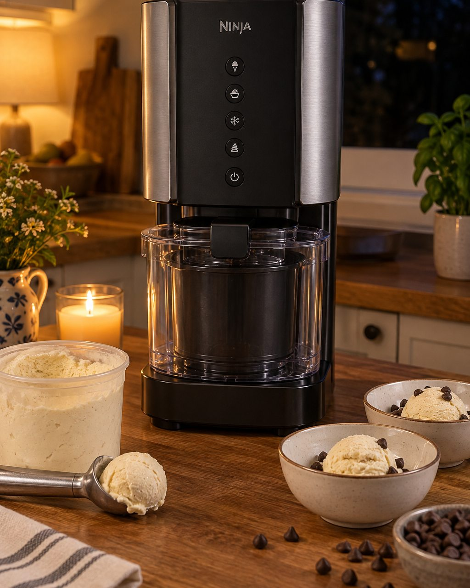
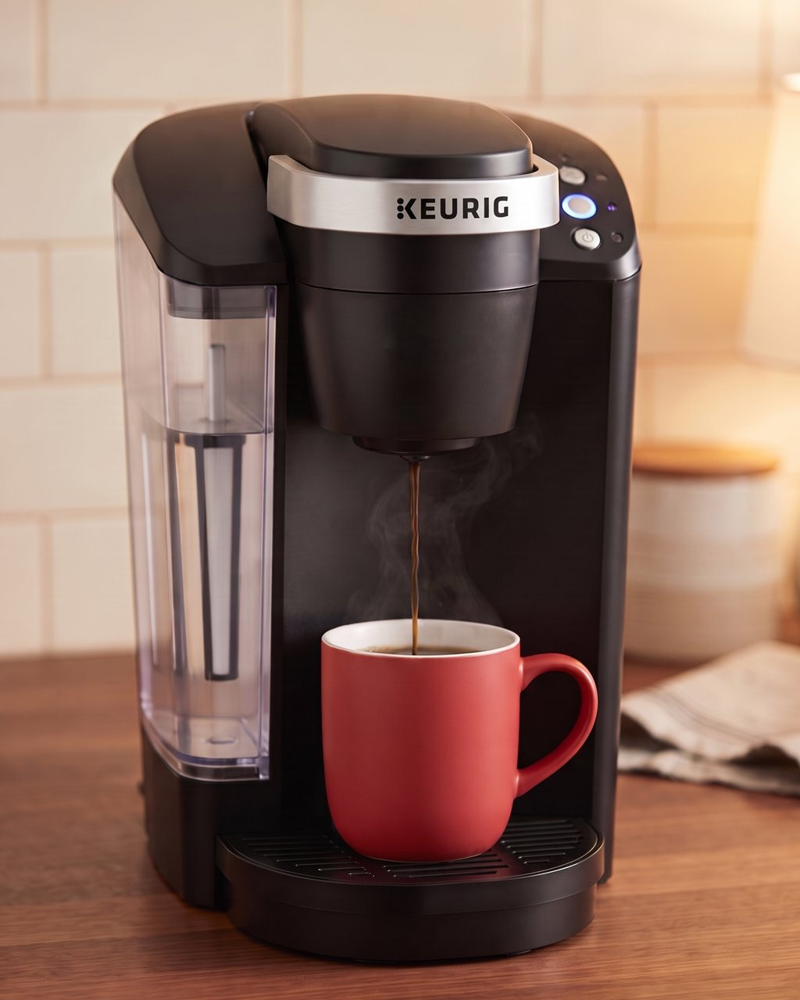
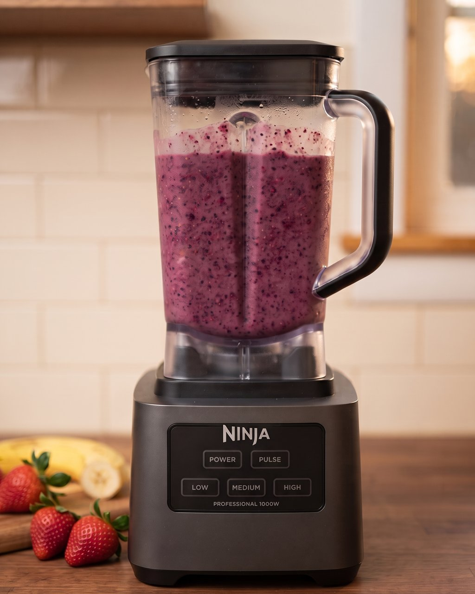
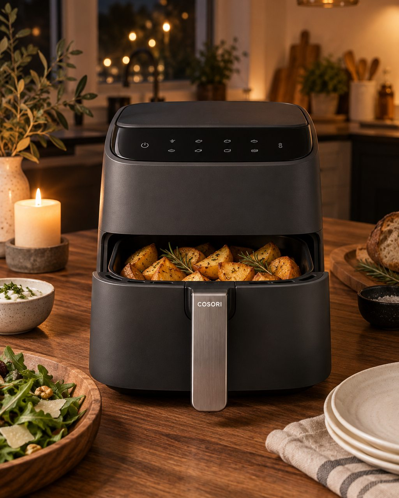
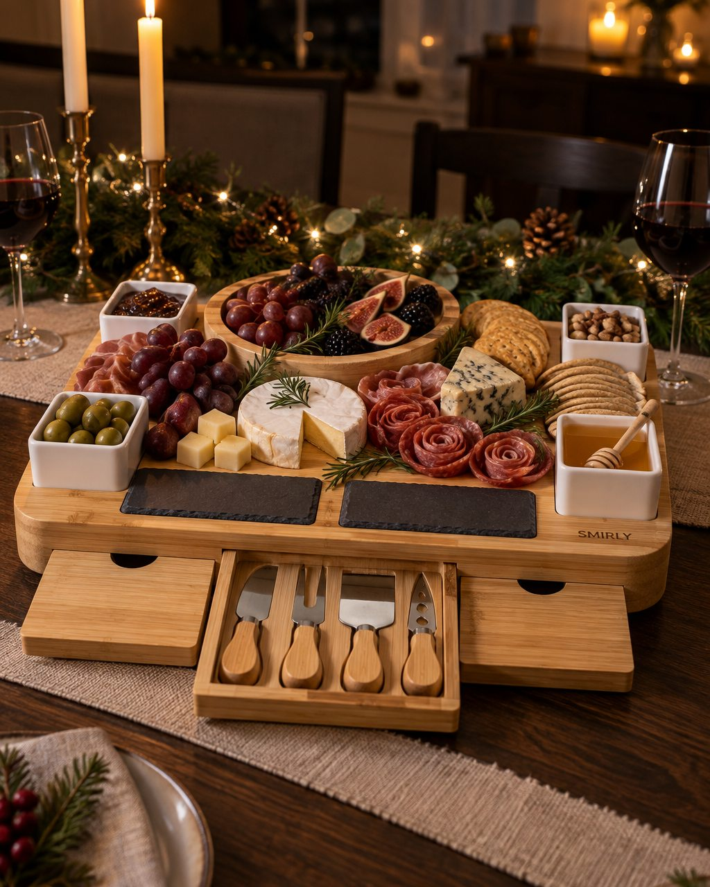
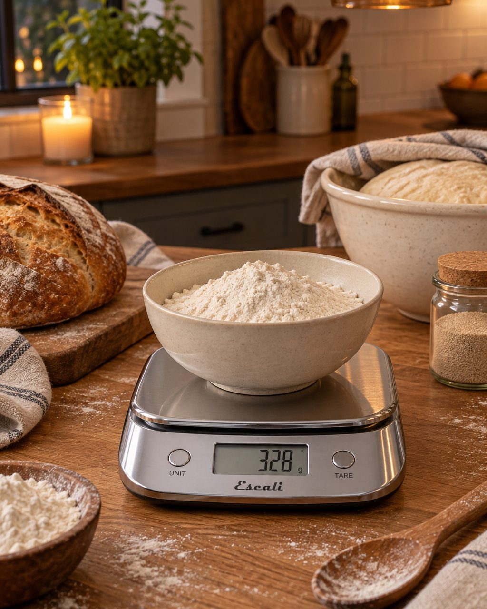
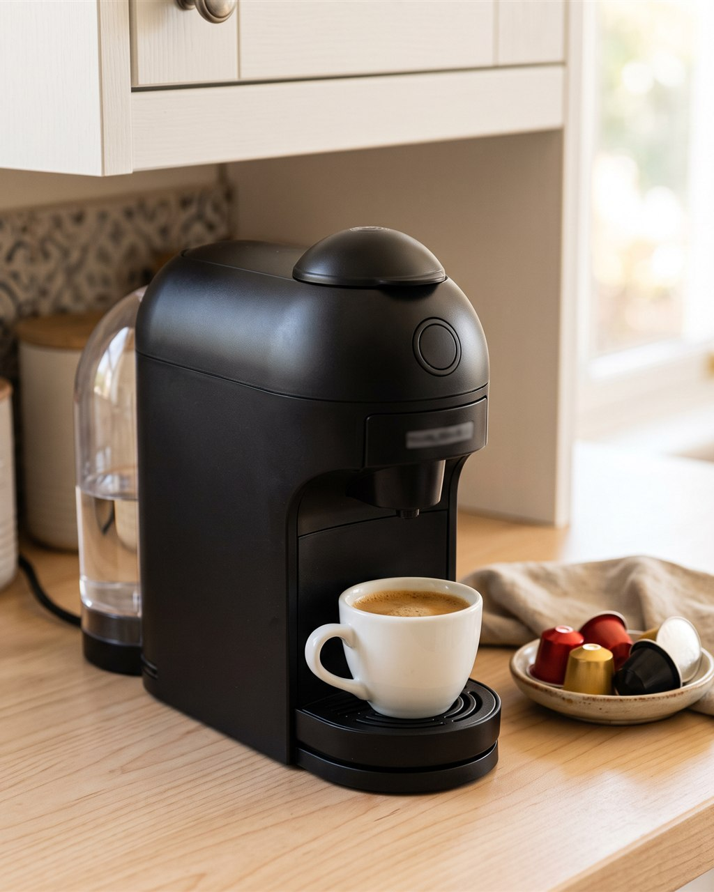
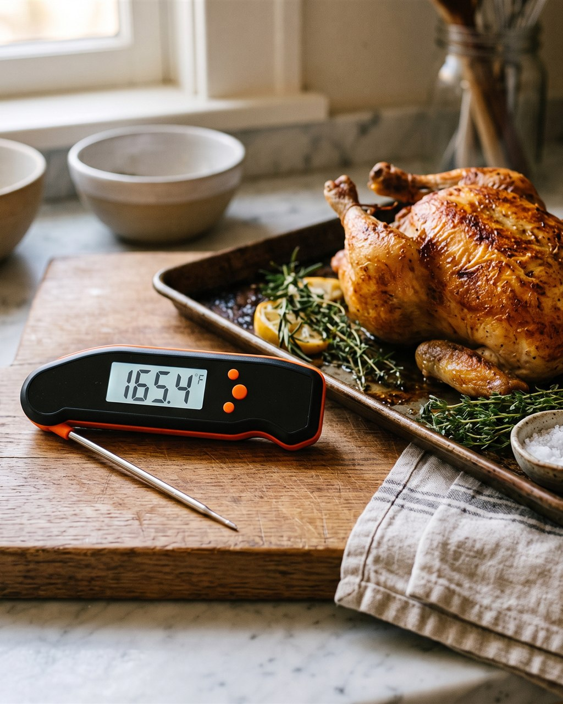

Ninja CREAMi NC301 ice cream maker
"Homemade ice cream, sorbet and milkshakes from a pint you froze overnight: 7 programs and ingredients you choose."
Why we picked it
We chose it for dessert nights and holiday hosting: freeze a pint base for 24 hours, then it spins into ice cream in minutes.
- 7 one-touch programs: ice cream, gelato, sorbet, milkshake, smoothie bowl, lite ice cream, mix-in
- Re-spin for a softer texture; Mix-In folds in chips, nuts or cookies
- Pints, lids and paddle are top-rack dishwasher safe
- Size
- 12.1 x 6.5 x 16 in
- Capacity
- 16 oz pints, 2 included
- Includes
- 2 pints with lids, Creamerizer paddle, outer bowl
Skip it if you want ice cream tonight: every batch needs a 24-hour freeze first.
Before you buy
- The 24-hour freeze: every pint base freezes overnight first, so plan dessert a day ahead.
- Freezer space: 16 oz pints (two included) need a flat spot in the freezer.
- Cleanup: pints, lids and paddle are top-rack dishwasher safe; the 16 in tall unit stays on the counter or in a cupboard.
Fits: Dessert nights and hosting, where a make-your-own pint station is the party trick.
Not for: Anyone who wants ice cream tonight, or has no freezer room for pints.
Goes with
- SMIRLY bamboo charcuterie board set: the board for the party before dessert
- Cosori TurboBlaze air fryer, 6 qt: the air fryer for the savory side
Full guide: read it
As an Amazon Associate, BuyRight Notes earns from qualifying purchases. We pick products from published specs and our own notes, not paid placements.
Kitchen

Keurig K-Classic, 3 cup sizesPod coffee with nothing to measure: drop in a K-Cup, press one of three buttons, and pour in about a minute.
Ninja Professional Blender, 72 ozEnough power to crush ice for frozen drinks, and a pitcher big enough to make smoothies for the whole family at once.
Cosori TurboBlaze air fryer, 6 qtA 6-quart air fryer for family dinners and party trays: 9 functions, 90 to 450°F, and a quieter fan than most.- Ninja CREAMi NC301 ice cream makerHomemade ice cream, sorbet and milkshakes from a pint you froze overnight: 7 programs and ingredients you choose.

SMIRLY bamboo charcuterie board setA complete cheese-board set for the host: bamboo board with drawers, knives, bowls and slate labels, boxed for gifting.
Escali Primo digital kitchen scaleThe two-button kitchen scale bakers keep for years: 11 lb capacity, 1 g readings and a sealed panel that wipes clean.
Nespresso Vertuo Pop+, one-touch pod coffeeOne-touch coffee or espresso from a pod, hot in 30 seconds, from a machine only 10.4 inches tall: the fast setup that still fits under a low cabinet.
TempPro TP19H instant-read thermometerThe one-second answer to "is it done?": a folding probe thermometer that reads in a second, turns on when you open it, and rinses under the tap.
From the same guide
- Ninja Professional Blender, 72 ozEnough power to crush ice for frozen drinks, and a pitcher big enough to make smoothies for the whole family at once.
- Cosori TurboBlaze air fryer, 6 qtA 6-quart air fryer for family dinners and party trays: 9 functions, 90 to 450°F, and a quieter fan than most.
- SMIRLY bamboo charcuterie board setA complete cheese-board set for the host: bamboo board with drawers, knives, bowls and slate labels, boxed for gifting.